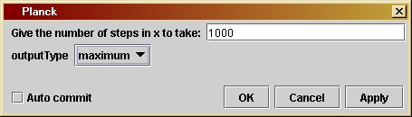
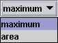

Planckversion 1.0
© 2003 Bernard Schutz
|
The parameter window for Planck is shown here. There are only two parameters, one to fix the number of steps along the domain of the Planck function that the program should take, and the other to choose the type of output. The first parameter determines the accuracy of the answer: the more steps, the more precision you will sample the Planck function with. The output type is chosen from a drop-down list (called a choice box). shown here. If you choose "maximum" then you will get the value of x (the independent variable) at which the maximum occurs. If you choose "area" you will get the area under the Planck curve. See Investigation 10.2 for more detail.
The area is computed by the trapezoidal rule, as illustrated in
Figure
10.5. To use this, the loop has to remember the previous value of y
as well as the current one. This is stored in yLast.
Then the area is computed in the step
area += 0.5*(y + yLast)*dx;
Notice that this uses the Java increment-assingment operator "+=",
which adds the right-hand-side to the area. The last step in the loop
is
yLast = y;
in which we ensure that at the next step, yLast
will hold the correct (i.e. previous) value.
/*
outputType determines what data
will be output. The user chooses
it in the user interface window
in order to select between
the location of the maximum of the
function (for Wien's law) or
the area under the Planck curve
(for the Stefan-Boltzmann law).
*/
private String outputType;
/*
Variables
needed for the calculation:
- x is the
independent variable in the Planck function.
- y is the
value of the Planck function y=x^5/(e^x-1)
- xMin is
the beginning of the range of x.
- XMax is
the end of the range of x.
- xLow is
the value of x, below which we use the small-x
approximation for the Planck function, as in the text.
- xHigh
is the value of x, above which we use the large-x
approximation for the Planck function, as in the text.
- dx is
the step-size in x.
- area will
accumulate the area under the curve.
- xPeak
is the value of x where the Planck function reaches
its maximum. It is set to zero at first and changed in
the loop until the correct value is reached.
- yPeak
is the maximum value of the Planck function. It is
set to zero at first and changed in the loop until the
correct value is reached.
- yLast
is a variable that will hold the value of y at the
lower of the two values of x in the intervals used for
finding the area under the curve.
*/
double x, y;
double xMin = 0.01;
double xMax = 100.0;
double xLow = 0.05;
double xHigh = 20.0;
double dx = 0.01;
double area = 0.0;
double xPeak = 0.0;
double yPeak = 0.0;
double yLast = 0;
/*
Now we enter
the for loop that runs across the domain x and
searches
for the maximum of the Planck function and calculates
the area
under the curve.
*/
for ( x = xMin; x <=
xMax; x += dx ) {
/*
Compute the value of the Planck function, using the
approximations for small or large x as appropriate.
*/
if ( x < xLow ) y = Math.pow(x, 4);
else if ( x > xHigh ) y = Math.exp( 5.0*Math.log(x)-x );
else y = Math.pow(x, 5) / (Math.exp(x) - 1);
/*
Find the maximum by testing each new value of y to
see if is larger than the one already stored in
yPeak. If it is larger, then yPeak is set equal to
the new value and xPeak is set equal to x. In this
way when the loop is finished xPeak contains the
location of the maximum.
*/
if (y > yPeak) {
yPeak = y;
xPeak = x;
}
/*
To find the area, add in the area under the curve
(as computed by the approximation described in the
text) between the present value of x and the previous
one. The value of y at the previous x has been stored
in yLast. Note that the area required is under the
curve x^3/(e^x-1), so we must divide by x^2.
*/
y /= (x*x);
area += 0.5*(y + yLast)*dx;
/*
Now make sure yLast contains the current value of y,
which will be the previous value at the next step.
*/
yLast = y;
}
if
(outputType.equals("area"))
output( new Const(area));
else if
(outputType.equals("maximum"))
output( new Const(xPeak));
}